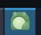

Linux apps show a yellow W icon on the taskbar
The Problem
I have been trying out desktop Linux (specifically Fedora with KDE Plasma), but occasionally I want to use an app that isn’t available through a package manager, and its icon on the taskbar is an ugly yellow circle with the letter W in it.
The Solution
The app is displaying the default Wayland icon because the OS is picky about the exact name of the .desktop file. In my case, I had named it gram.desktop, but it needed to match the application’s exact package name, app.liten.Gram.desktop. You can find this a number of ways, but I found it by right-clicking the top of the window and going to More Actions > Configure Special Application Settings, and copying the text in the field marked Window class (application).

How I arrived at this problem
I was trying to install a code editor called Gram, which isn’t available through Fedora’s default package manager. There is a Linux binary, which is a bunch of files in a folder.
A natural thing you’d want to do with a desktop application on your computer is to put it in your application menu and pin it to the taskbar. Even with a relatively polished desktop environment like KDE Plasma, this is unreasonably, obnoxiously unintuitive.
First, you need a place for the application to live after you’ve downloaded it. I chose to make a directory under ~/Apps/. Then, you need a .desktop file. My .desktop file looks like this:
[Desktop Entry]
Type=Application
Name=Gram
Exec=/home/username/Apps/gram.app/bin/gram
Icon=/home/username/Apps/gram.app/share/icons/hicolor/scalable/apps/app.liten.Gram.svg
Terminal=false
Categories=Development;Important note: You have to specify your actual user directory instead of using the convenient ~/Apps or even $HOME/Apps in this file because nothing is ever easy in Linux.
I’m aware of other fields these files can contain, but I’m not familiar with where .desktop files are documented or any convenient tools to create them. You will find no shortage of Linux guys online making excuses for how stupid this is.
Even though the information in this file is enough to show the app with its icon in the application launcher, once it launches, the OS forgets where the icon is unless you’ve named the .desktop file according to its obscure preferences.
What didn’t work for me
I saw advice to set the icon under “Special Window Settings” or “Application Rules” using a “desktop file name” property, but that didn’t work for me. The application would start with the correct icon, and immediately swap back to the Wayland icon.